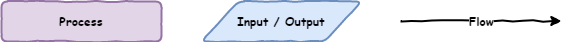
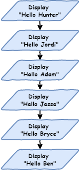
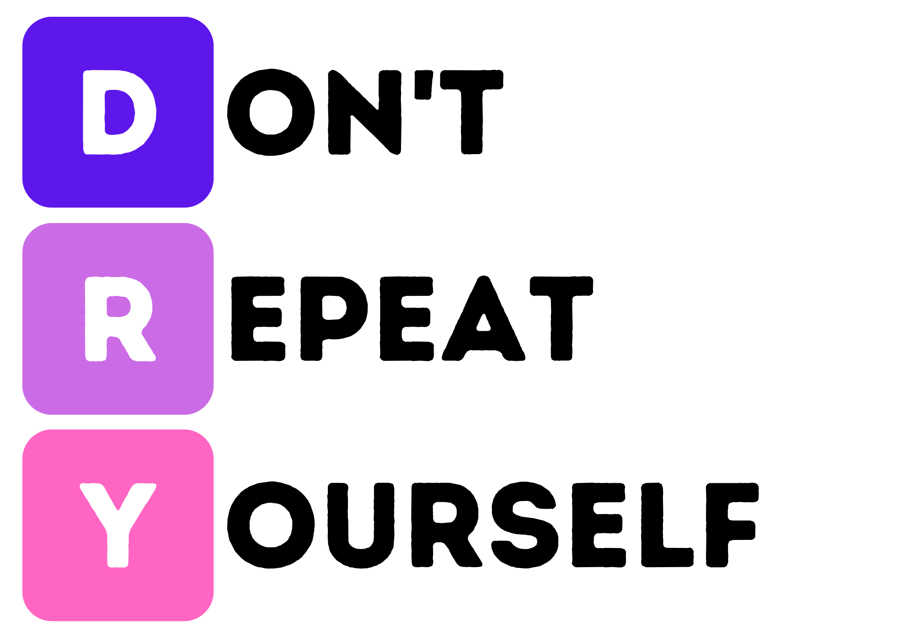
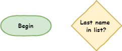
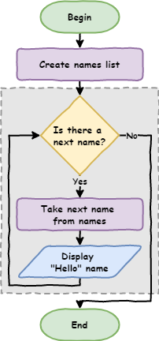
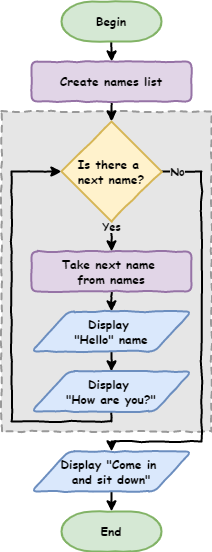
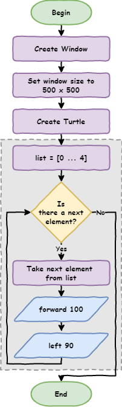

Python Turtle - Lesson 2¶
Part 1: Iteration introduction¶
So far, when we write Python code, each line runs one after the other.
This is called sequential execution. It is the normal way programs run.
The program starts at the top and works its way down, one line at a time.
This movement through the code is called the flow of the program (like water flowing through a pipe or electricity moving through a wire).
Introduction to flowcharts¶
There is a special type of diagram used to show how a program works. It is called a flowchart.
A flowchart shows each step in a program and how the program moves from one step to the next.
We use different shapes to represent different parts of the program:
rectangles show a process (something the program does)
parallelograms show input or output (getting or showing information)
arrows show the flow (the direction the program moves)

If we wanted a program to say hello to six people, you would show it in a flowchart like this:

If we wanted a program to say hello to six people, we could show it using a flowchart like this:
The flowchart would have six steps, each one telling the program to say “Hello”.
Each step would be in a rectangle (a process), and arrows would connect them to show the order.
So the flow would go from one “say Hello” step to the next, six times in total.
1# our iteration program
2
3print("Hello Hunter")
4print("Hello Jordi")
5print("Hello Adam")
6print("Hello Jesse")
7print("Hello Bryce")
8print("Hello Ben")
Because the program runs in order (sequential), Python will start at line 1 and go down to line 8, one line at a time.
Run the program and see what happens.
You should see the output appear in the Shell.
Hello Hunter
Hello Jordi
Hello Adam
Hello Jesse
Hello Bryce
Hello Ben
If you change the order of the code, the program will behave differently.
This is because Python runs each line from top to bottom, so the order of the lines matters.
1# our iteration program
2
3print("Hello Jesse")
4print("Hello Bryce")
5print("Hello Ben")
6print("Hello Hunter")
7print("Hello Jordi")
8print("Hello Adam")
This code will give the following output.
Hello Jesse
Hello Bryce
Hello Ben
Hello Hunter
Hello Jordi
Hello Adam
Sequential programming is fine for small programs, but it becomes a problem with bigger ones.
You don’t want to type every line again and again.
Imagine if you had to say hello to 500 people, or even 1,000 people. That would take a long time to type. There are other problems too.
What if you wanted to change "hello" to "good morning"? You would have to change every single line of code.
This might be okay for small programs, but it becomes difficult with bigger programs.
In Digital Technologies, we say this is not scalable (it does not work well as the program gets bigger).
Iteration¶
If you look at the code, you will see that a lot of it repeats.
Lines 3 to 8 are almost the same. The only thing that changes is the name each time.
1# our iteration program
2
3print("Hello Jesse")
4print("Hello Bryce")
5print("Hello Ben")
6print("Hello Hunter")
7print("Hello Jordi")
8print("Hello Adam")
This breaks the DRY programming principle.
DRY stands for Don’t Repeat Yourself.
It means you should not write the same code over and over again.

One way to avoid repeating yourself is to use iteration (also called loops).
Loops repeat the same code again and again, with a small change each time.
This is perfect for our example, because we want to repeat the line print(“Hello”, name) but use a different name each time.
For loops¶
The first loop we will use is called a for loop.
This is the first control structure we have used.
A control structure changes how the program flows, instead of just running from top to bottom in order.
Update your code so it matches the code below.
1# our iteration program
2
3names = ["Hunter", "Jordi", "Adam", "Jesse", "Bryce", "Ben"]
4
5for name in names:
6 print("Hello", name)
Predict and Run
Now run the code.
But remember to use PRIMM:
Predict what you think will happen then Run the code to check your ideas.
Investigate
Let’s investigate the code step by step:
Line 3is something new.It is called a list, and it works like a real-life list.
It has a number of items.
The items are in a specific order.
The
[and]show where the list starts and ends."Hunter","Jordi","Adam","Jesse","Bryce","Ben"are the items in the list. These items are called elements.Each element is separated by a comma (
,).A list needs a name, just like our turtle or window.
We use
names =to give the list the namenames.
Line 5is also new. This is how we make aforloop in Python.foris a special word that starts the loop.in namestells Python to go through each item in thenameslist.nameis the current item the loop is using.:tells Python that the next lines (which are indented) belong to the loop.
Line 6looks a bit different because it is indented.The indentation shows which code will repeat in the loop.
There can be more than one indented line.
These lines together are called a code block.
Indents should be four spaces.
In Thonny, pressing the
Tabkey will add four spaces for you.
print("Hello", name)tells Python to:print
Helloto the Shellthen print the current name from the list
For loop flowchart¶
Feeling a bit confusing? Let’s look at it using a flowchart.
Before that, we need to learn two more symbols:
Terminators: these show the start and end of the program
Decisions: these are questions the program asks
The answer will change the path the program takes (it can go in different directions)

Now let’s look at the flowchart for the for loop.
The shapes inside the dotted box show the for loop.
These steps repeat again and again, once for each item in the list.
Dotted box
The dotted box has is to help you identify the for loop structure. It is not a normal flowchart symbol.

Tracing with debugger¶
One last way to understand how a for loop works is to use Thonny’s debugger.
What are debuggers?
Debuggers are powerful tools that help you see what happens when your code runs. Thonny’s debugger is one of these tools.
The Debugging with Thonny tutorial explains its features in more detail.
Start the debugger by clicking the bug icon next to the play button.
Keep pressing F7 on your keyboard, and Thonny will move through the code one step at a time.
Watch the values in the Variables panel as you do this.
We will learn more about using the debugger later in the course.
Code blocks¶
Earlier, we said that indented code over multiple lines is called a code block.
Let’s see how that works.
Change your code so it matches the code below.
1# our iteration program
2
3names = ["Hunter", "Jordi", "Adam", "Bryce", "Ben"]
4
5for name in names:
6 print("Hello", name)
7 print("How are you?")
Predict what you think the code will do, then run it to check.
In your Shell, you should see:
Hello Hunter
How are you?
Hello Jordi
How are you?
Hello Adam
How are you?
Hello Jesse
How are you?
Hello Bryce
How are you?
Hello Ben
How are you?
Notice that all of the code in the code block repeats.
This means every line that is indented the same amount will run again in the for loop.
It is important that all lines in the code block use the same number of spaces for indentation.
What do you think will happen if we remove the indentation?
Change your code by adding
print("Come in and sit down")
to the end.
Make sure this new line is not indented, so your code looks like the example below.
1# our iteration program
2
3names = ["Hunter", "Jordi", "Adam", "Bryce", "Ben"]
4
5for name in names:
6 print("Hello", name)
7 print("How are you?")
8
9print("Come in and sit down")
Predict what will happen, then run your code.
Your Shell should show:
Hello Hunter
How are you?
Hello Jordi
How are you?
Hello Adam
How are you?
Hello Jesse
How are you?
Hello Bryce
How are you?
Hello Ben
How are you?
Come in and sit down
Notice that print("Come in and sit down") does not repeat.
Because it is not indented, it is not part of the for loop.
This means it runs after the loop has finished.
The flowchart for your updated code would look like this:

Part 2: List numbers and Range¶
Introducing range¶
You can also use loops with lists of numbers.
Create a new file and name it lesson_2_pt_2a.py, then try the code below.
1number_list = [1, 2, 3, 4, 5, 6, 7, 8, 9, 10]
2
3for number in number_list:
4 print(number)
But what if you want to print all the numbers from 1 to 100? Do you really want to type all of them?
Luckily, Python has something called the range function. It creates a list of numbers for you between two values.
Change your code so it matches the code below.
1number_list = range(1, 101)
2
3for number in number_list:
4 print(number)
Predict
Predict what you think will happen
Run
Run the code to check your ideas.
Investigate
Let’s investigate the code.
Unpacking the code:
rangetells Python to create a list of numbers1is the first number in the list101is the first number not included in the listThis might seem confusing, but we will learn why later
Modify
We can make our code shorter by using the range function directly inside the for loop.
1for number in range(1, 101):
2 print(number)
Use for Turtle¶
Code blocks can include any type of code, including Turtle code. So let’s try it.
Create a new file called lesson_2_pt_2b.py and type in the code below.
1import turtle
2
3window = turtle.Screen()
4window.setup(500, 500)
5
6my_ttl = turtle.Turtle()
7
8for number in range(1, 101):
9 my_ttl.forward(100)
10 my_ttl.backward(100)
11 my_ttl.left(3)
Predict and Run
Predict what you think will happen, then run the code.
Did it do what you expected?
Investigate
Investigate the code by changing different parts of it.
Try changing one thing at a time so you can clearly see what each change does.
Modify
Change the code so the turtle turns a little each time and repeats enough times to go all the way around.
A full circle is 360 degrees, so your repeated turns need to add up to 360.
For example, you could use:
36repeats of10degrees72repeats of5degrees120repeats of3degrees
Test different values until the turtle draws a complete circle.
Exercises¶
In this course, the exercises are the make component of the PRIMM model. So work through the following exercise and make your own code.
Exercise 1
Download lesson_2_ex_1.py file and save it in your lesson folder. The starting code is shown below:
After line 9, follow the comment and write code to draw a square, but only use 3 lines.
Hint: use a for loop to repeat the same steps.
A square has 4 sides, so your loop should repeat 4 times.
Use the flowchart to help guide your thinking.

The starting code is shown below:
1import turtle
2
3window = turtle.Screen()
4window.setup(500, 500)
5my_ttl = turtle.Turtle()
6
7###################################################
8## Draw a square only using 3 more lines of code ##
9###################################################
Exercise 2
Download lesson_2_ex_2.py file and save it in your lesson folder.
After line 9, follow the comment and write code to draw a triangle using only 3 lines.
A triangle has 3 sides, so your loop should repeat 3 times.
This will make the turtle draw a complete triangle.
The starting code is shown below:
1import turtle
2
3window = turtle.Screen()
4window.setup(500, 500)
5my_ttl = turtle.Turtle()
6
7#############################################################
8## Draw a triangle only using 3 more lines of code 3 lines ##
9#############################################################
Exercise 3
Download lesson_2_ex_3.py file and save in to your lesson folder.
After line 9, follow the comment and write code to draw a hexagon using only 3 lines.
A hexagon has 6 sides.
The starting code is shown below:
1import turtle
2
3window = turtle.Screen()
4window.setup(500, 500)
5my_ttl = turtle.Turtle()
6
7####################################################
8## Draw a hexagon only using 3 more lines of code ##
9####################################################
Exercise 4
Download lesson_2_ex_4.py file and save it in your lesson folder.
After line 9, follow the comment and write code to draw a circle using only 3 lines.
A circle can be made by drawing lots of small lines and turning a little each time.
Your loop should repeat many times. Each time, the turtle should:
move forward a small amount
turn a small angle
This will make the turtle draw a shape that looks like a circle.
The starting code is shown below:
1import turtle
2
3window = turtle.Screen()
4window.setup(500, 500)
5my_ttl = turtle.Turtle()
6
7###################################################
8## Draw a circle only using 3 more lines of code ##
9###################################################
Exercise 5
Download lesson_2_ex_5.py file and save it in your lesson folder.
After line 9, write your own code to draw something interesting using for loops.
You could try ideas like:
a spiral (keep turning a little more each time)
a star pattern
multiple shapes repeated in a pattern
shapes that grow bigger each time
Experiment by changing:
how far the turtle moves
how much it turns
how many times the loop runs
Try different ideas and see what you can create.
The starting code is shown below:
1import turtle
2
3window = turtle.Screen()
4window.setup(500, 500)
5my_ttl = turtle.Turtle()
6
7##########################################################
8## Go Crazy and make something amazing with for loops!! ##
9##########################################################